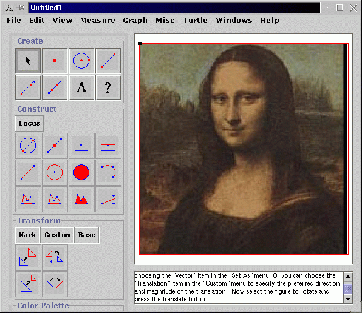

1. Start up Geometry Explorer and use the point tool to place a point in the white drawing area. We will attach an image to this point. The image we will use will be that of a person's face, either scanned in or downloaded from the Internet. Go the the "View" menu and select "Image..." from the options. A dialog box will pop-up. Locate the scanned-in face and click "Open" to load it into the main window. In the example below we have loaded in one of the most famous faces in history, the Mona Lisa.

2. Throughout history people's opinions of beauty and elegance have been based on a balance of proportions. In the case of the human face, let's measure the ratio of the height of the face to the width. Using the segment tool draw a segment approximately equal to the width of the face and another segment approximately equal to the height. These are shown in red below. Select the height segment and the width segment and select "Ratio" from the Measurement menu to calculate the ratio of the height of the face to the width.
3. Now let's have some fun. Partner up with another person in the class and use a ruler to measure this ratio in each other's face. Then, bring your measurements to the front and we will find the average of the ratios of everyone's faces. Interesting how the average ratio is about 1.6 !
4. In ancient Greece, Geometry was studied for its aesthetic as well as practical appeal. To the Greeks the harmony of proportion was an ideal to be strived for. One harmony of proportion that they studied had to do with cutting a segment into two parts such that the ratios of the pieces exactly balanced. To look at this let's clear the main window and draw a segment somewhere on the screen. (This is segment AB below) Now using the point tool click on the segment, thus attaching a point (C) to the segment. If we drag C around it will stay attached to the segment AB.
5. Now, select points A, B, and C (in that order) and choose "Ratio" from the Measure menu. Then, select points B, C, and A (in that order) and choose "Ratio" again. The first ratio is the ratio of the total segment AB to the length of BC and the second ratio is that of segment BC to CA. Drag point C around and see if you can get these two segments to match up.
6. Interesting!! The ratios seem to match at that magic ratio of about 1.6 again. Let's see why this is. For the sake of argument let's set the length of BC equal to 1. Let's let x be the length of AB. Then, what we are looking for is a value x that satisfies the equation x/1 = 1/(x-1). If we multiply this out we get that x must satisfy x^2 - x - 1 = 0. This has two roots (1 +- sqrt(5))/2. The positive one is (1+sqrt(5))/2 which is about 1.62. This ratio was so special to the Greeks that they named it the "Golden Ratio".
7. Homework: Look around your house and around your neighborhood for objects that look like they have roughly the proportions of the Golden Ratio. Carry a ruler or yardstick with you to get the proportions. Be creative -- look at all kinds of objects. You will be amazed at how many objects have this amazing ratio once you start looking around.
8. (If time) The eyes are extremely important facial features.
Measure the ratio of the distance from the eyebrows to the bottom of the
chin over the distance from the top of the forehead to the eyebrows.
How about the ratio of the distance from the shoulders to the waist over
the width of your ribcage?